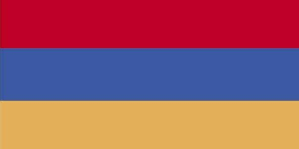

Introduction

Image The World Factbook 2021. Washington, DC: Central Intelligence Agency, 2021. https://www.cia.gov/the-world-factbook/
Armenia prides itself on being the first nation to formally adopt Christianity (early 4th century). Despite periods of autonomy, over the centuries Armenia came under the sway of various empires including the Roman, Byzantine, Arab, Persian, and Ottoman.
During World War I in the western portion of Armenia, the Ottoman Empire instituted a policy of forced resettlement coupled with other harsh practices that resulted in at least 1 million Armenian deaths - actions widely recognized as constituting genocide.
The eastern area of Armenia was ceded by the Ottomans to Russia in 1828; this portion declared its independence in 1918, but was conquered by the Soviet Red Army in 1920.
Armenia remains involved in the protracted struggle with Azerbaijan over control of Nagorno-Karabakh, a primarily ethnic Armenian region that Moscow recognized in 1923 as an autonomous oblast within Soviet Azerbaijan.
In the late Soviet period, a separatist movement developed that sought to end Azerbaijani control over the region. Fighting over Nagorno-Karabakh began in 1988 and escalated after Armenia and Azerbaijan attained independence from the Soviet Union in 1991.
By the time a cease-fire took effect in May 1994, separatists, with Armenian support, controlled Nagorno‑Karabakh and seven surrounding Azerbaijani territories. Following the Second Nagorno-Karabakh War in September-November 2020, Armenia lost control over much of the territory it had captured a quarter century earlier.
Under the terms of a cease-fire agreement signed in November 2020, Armenia returned to Azerbaijan the remaining territories it occupied and some parts of the Nagorno-Karabakh region, including the key city that Armenians call Shushi and Azerbaijanis call Shusha.
Turkey closed the common border with Armenia in 1993 in support of Azerbaijan in its conflict with Armenia over control of Nagorno-Karabakh and surrounding areas, further hampering Armenian economic growth.
In 2009, Armenia and Turkey signed Protocols normalizing relations between the two countries, but neither country ratified the Protocols, and Armenia officially withdrew from the Protocols in March 2018. In 2015, Armenia joined the Eurasian Economic Union alongside Russia, Belarus, Kazakhstan, and Kyrgyzstan.
In November 2017, Armenia signed a Comprehensive and Enhanced Partnership Agreement (CEPA) with the EU. In spring 2018, former President of Armenia (2008-18) Serzh SARGSIAN of the Republican Party of Armenia (RPA) tried to extend his time in power by becoming prime minister, prompting popular protests that became known as the “Velvet Revolution” after SARGSIAN was forced to resign.
The leader of the protests, Civil Contract party chief Nikol PASHINYAN, was elected by the National Assembly as the new prime minister on 8 May 2018. PASHINYAN’s party prevailed in an early legislative election in December 2018, and he was reelected as prime minister.
Geograpy
Location
- Armenia is located in Southwestern Asia between Turkey (to the west) and Azerbaijan.
Geographic Coordinates
- The geographic coordinates for the country of Armenia are 40 00 N, 45 00 E.
Land Use
| Type | Event (2018) |
|---|---|
| Agriculture Land | 59.7% |
| Forest | 9.1% |
| Other | 31.2% |
People and Society
Population
- The current population of Armenia is 3,000,756 as of the year 2022.
Languages
- 97.9% of people in Armenia speak Armenian.
Population Distribution
- The Armennian population is mostly located in the northern half of the country.
- Yerevan, which is the capital of Armenia, is home to more than five times as many people as Gyumri.
- Gyumri is the second largest city in Armenia.
Government
National Holiday
- Armenia celebrates Independence Day on September 21 which was established in 1991.
Legal System
- The country of Armenia uses a civil law system
Flag Description
Image The World Factbook 2021. Washington, DC: Central Intelligence Agency, 2021. https://www.cia.gov/the-world-factbook/
The Armenian flag has three equal horizontal bands of red on top which are blue and orange.
- The color orange represents the land and the courage of the countries workers who farm it
- The color blue is to symbolize the Armenian skies as well as hope.
- The color red recalls the blood shed for libery.